Fernado de Noronha
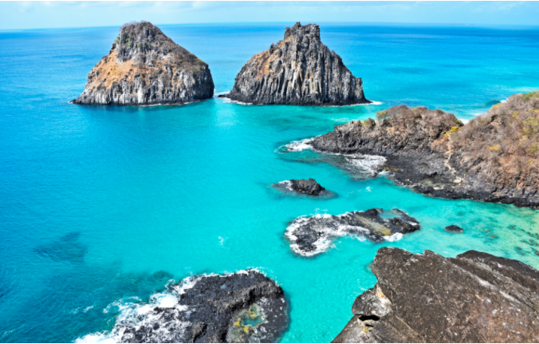
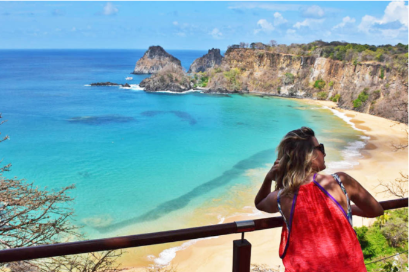
 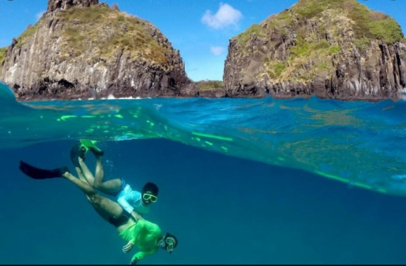
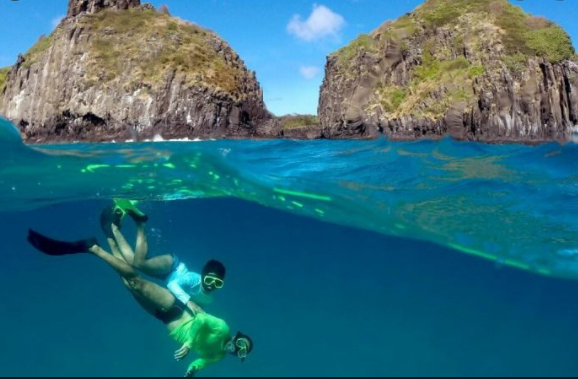

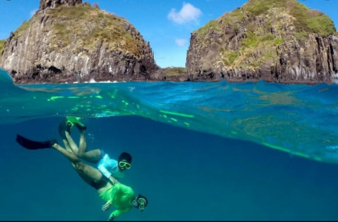
Porto de Galinhas
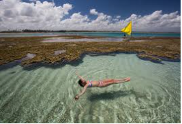
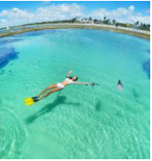
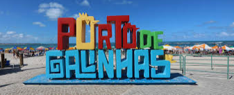
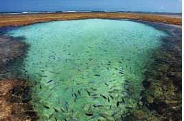
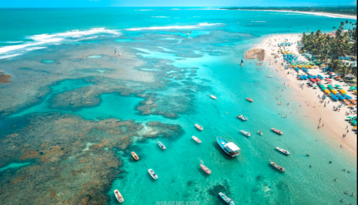
Pernambuco é um estado no nordeste do Brasil, no Oceano Atlântico. A sua capital moderna, o Recife, inclui um porto, a cidade velha e a popular área balnear de Boa Viagem
Ao largo da costa, o arquipélago vulcânico de Fernando de Noronha possui uma linha costeira dentada, praias poucos urbanizadas e um parque marítimo. A sul do Recife, a praia de Porto de Galinhas, protegida por um recife, oferece piscinas naturais. A norte encontra-se Olinda, uma cidade colonial situada entre uma vegetação exuberante
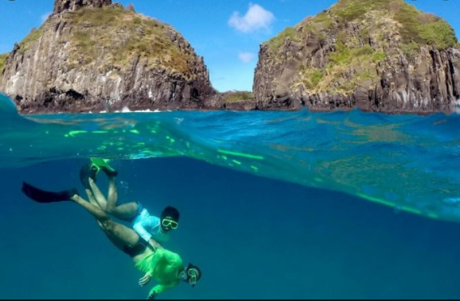